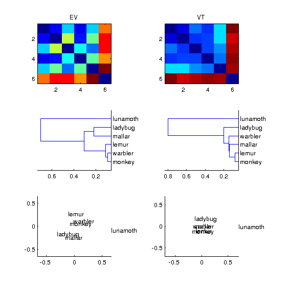
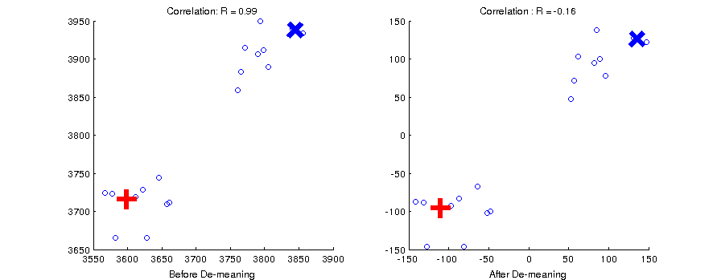

Load the saved variables in the files v1_model.mat and behav_sim.mat. These should be in your scripts folder. These are dissimilarity matrices (DSMs) for our six animals. The v1 model DSM was made by modeling each stimulus image (jpeg) with a simple v1 cortical model, and then calculating the vector distances between the stimuli using the features of the model. The behavioral DSM was made by having human subjects judge the similarity between every pair of animals.
Note that these are ordinary DSMs that have zeros on the diagonal and are symmetric about the diagonal. Use matlabs imagesc to view each DSM:
load v1_model;
load behav_sim;
subplot(1,2,1); imagesc(v1_model); title('V1 Model DSM');
subplot(1,2,2); imagesc(behav); title('Behavioral DSM');
The categorical structure is obvious in the categorical dissimilarity, but not in the v1 model DSM.
Now use matlab’s linkage function to do hierarchical clustering on the DSMs. linkage takes input in the form of the flattered upper triangle of the DSM (as is output by pdist). So first flatten each DSM using squareform. In order to view the dendrogram, we need to use matlab’s dendrogram function.
Here is how to do this with the behavioral similarity:
hclus = linkage(squareform(behav));
% We also want to have labels on our dendrogram
labels = {'monkey','lemur','mallard','warbler','ladybug','lunamoth'};
figure();
dendrogram(hclus, 'labels',labels);
title('Behavioral DSM - linkage');
Now let’s use Matlab’s classic multidimensional scaling (cmdscale) to look at the DSMs in another way. cmdscale returns a set of factor scores for dimension and stimulus. To view the first 2 dimensions we can use matlab’s text function:
F = cmdscale(behav);
figure();
text(F(:,1), F(:,2), labels);
%
% We will also need to set the axes so we can see all of the points
% Let's use the maximum absolute magnitude
mx = max(abs(F(:)));
xlim([-mx mx]); ylim([-mx mx]);
title('Behavioral DSM, cmdscale, dims 1 and 2');
Do this also for the V1 model DSM.
Now using the data from the “allruns” datasets, load one subject at a time, compute the DSMs for VT and EV. Visualize them side-by-side using the three methods above so that the output looks like the image below (subject 4). You will need to use matlab’s subplot function for this.
Hint: run_rsa_visualize_skl
Solution: run_rsa_visualize
Now using the script you wrote to visualize EV and LV, go through the set of subjects and see how the patterns change for different subjects. What trends do you notice?
A dataset can be thought of as a set of points in N-dimensional vector space. This is easy to visualize with 2 or three dimensions (voxels), but it is difficult to do with several hundred dimensions. Nevertheless, the math stays the same whether you are dealing with 3 voxels or 3 hundred. Remember that our fMRI data comes from a time-course analysis that included some estimation of the baseline activity for each voxel. The statistics we have for our categories are estimations of the differences from that baseline. This means that the origin of our vector space corresponds to that arbitrary baseline.
Because correlation distance is a measure of the angles between vectors, it is sensitive to where the data cloud resides with respect to the origin. Ideally, the origin of the vector space has a non-arbitray location so that it is maximally informative about the relationships between our stimuli. We can accomplish this by centering the data cloud on the origin of the space by removing the mean value across conditions at each voxel.
See what happens to the correlation between two vectors marked with blue X and a red cross in the figure below. On the left the data cloud has an arbitray origin, and the vectors are almost perfectly correlated. After demeaning, they are negatively correlated.
Thus before calculating a neural DSM, it is good to center the data first by demeaning. Rerun your visualization script above by centering the data first. How does this change the results?
Solution: run_demean
It is easy to compare dissimilarity matrices by computing the Pearson correlation between two flattened upper triangle DSMs using matlab’s corrcoef function. For the next exercise, stack flattened DSMs vertically into a single matrix starting with all of the EV DSMs from every subject then all of the VT DSM. You should have a 10x15 matrix. Then add the v1 model and the behavioral DSMs to make it a 12x15 matrix. Now compute the cross-correlation matrix using corrcoef. Visualize the cross-correlation matrix with imagesc. Try this with demeaning and without demeaning to compare the results. Finally, use matlabs boxplot function to view the distributions of correlations between neural simiilarities and model/behavioral DSMs.
Hint: run_compare_dsm_skl
Solution: run_compare_dsm